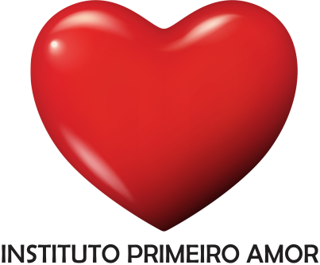

<!DOCTYPE html>
<html lang="Pt-br">
<head>
   <meta charset="UTF-8">
   <meta http-equiv="X-UA-Compatible" content="IE=edge">
   <meta name="viewport" content="width=device-width, initial-scale=1.0">
   <link href="style.css" rel="stylesheet" type="text/css" />
   <link href="slides.css" rel="stylesheet" type="text/css" />
   <link rel="icon" type="image/x-icon" href="assets/imgs/logo1a.png">
   <title>Instituto Primeiro Amor</title>
 
</head>


<body>
   <script src="script.js"></script>


   <main>
       <aside>
        
     <header>
   <div id="menua">
      <ul>
         <li><a href="menu.html" target="_top">INÍCIO</a></li>
         <li><a href="parceiros.html" target="_top">PARCEIROS</a></li>
         <li><a href="participe.html" target="_top">PARTICIPE</a></li>
         <li><a href="projetos.html" target="_top">PROJETOS</a></li>
         <li><a href="doacao.html" target="_top">DOAÇÃO</a></li>
         <li><a href="contato.html" target="_top">CONTATOS</a></li>
         <li id='maisobre'><a href="sobre.html" target="_top">SOBRE</a></li>
      </ul>
      
   </div>

   <div class="blusa"><figure>
    <a href="assets/imgs/Declaração Universal dos Direitos Humanos.pdf" target="_blank"></a>
</div><br><br>


 <center> <strong> A OCIP (Organização da Sociedade Civil de Interesse Público) Primeiro Amor tem como finalidade a promoção de assistência social a comunidades carentes, idosos e dependentes quimicos.<br><br>
    Nossa atuação se dá desde a captação e distribuição de alimentos, até a administração e manutenção de centros de recuperação de dependentes quimicos, lar para idosos, orfanato.<br><br>
    O recurso para manutenção desses projetos é oriunda da doação de empresas, que podem deduzir a mesma de seus respectivos imposto de renda.<br><br>
    Nossa OSCIP é composta por homens e mulheres simples, mas que entendem que mesmo com todo sua simplicidade podem ajudar aqueles que são menos afortunados na vida. Sozinhos não temos capacidade de realizar toda a missão que temos em mente, mas com o auxilio de pessoas que nutrem pelo próximo o mesmo cuidado e carinho que nutrimos, podemos minimizar o sofrimento de algumas pessoas. 
 </strong></center><br><br>
    

</body>


</html>